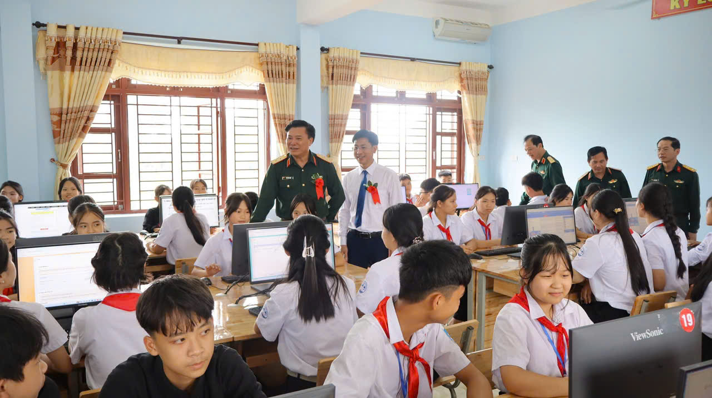
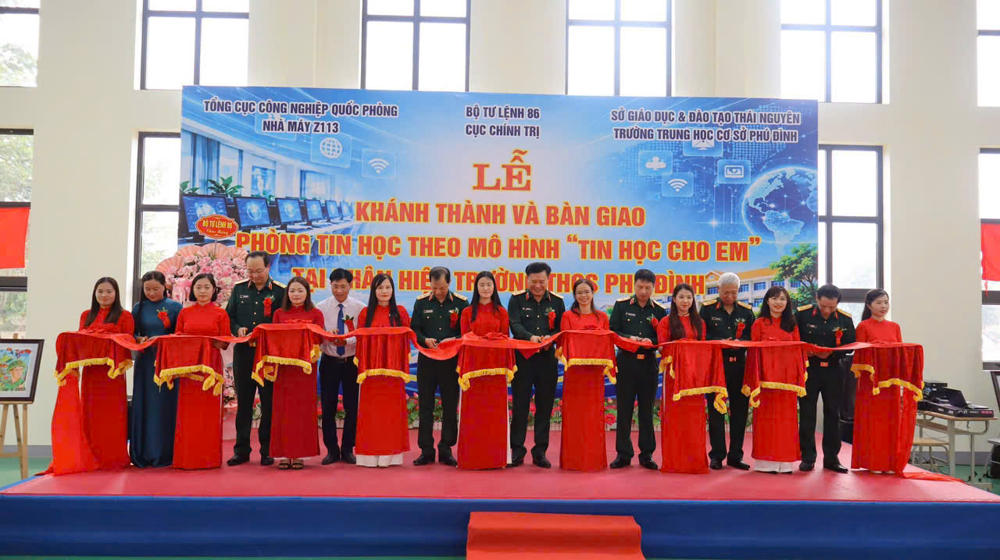
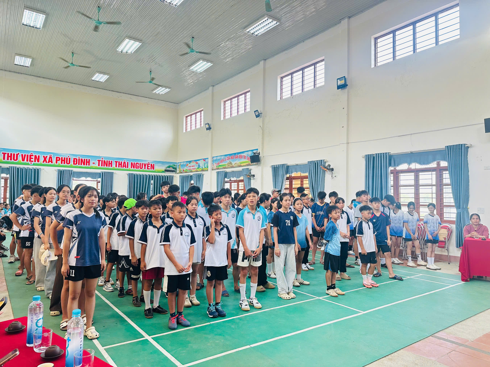
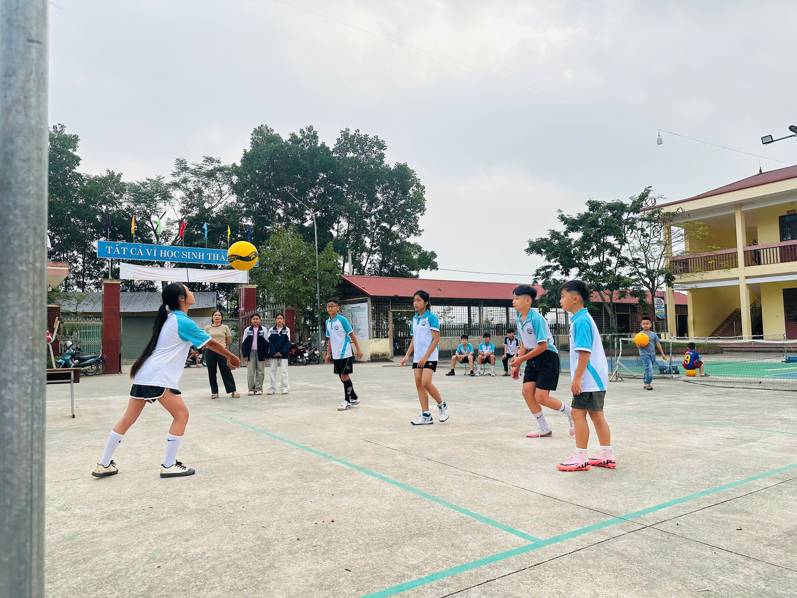
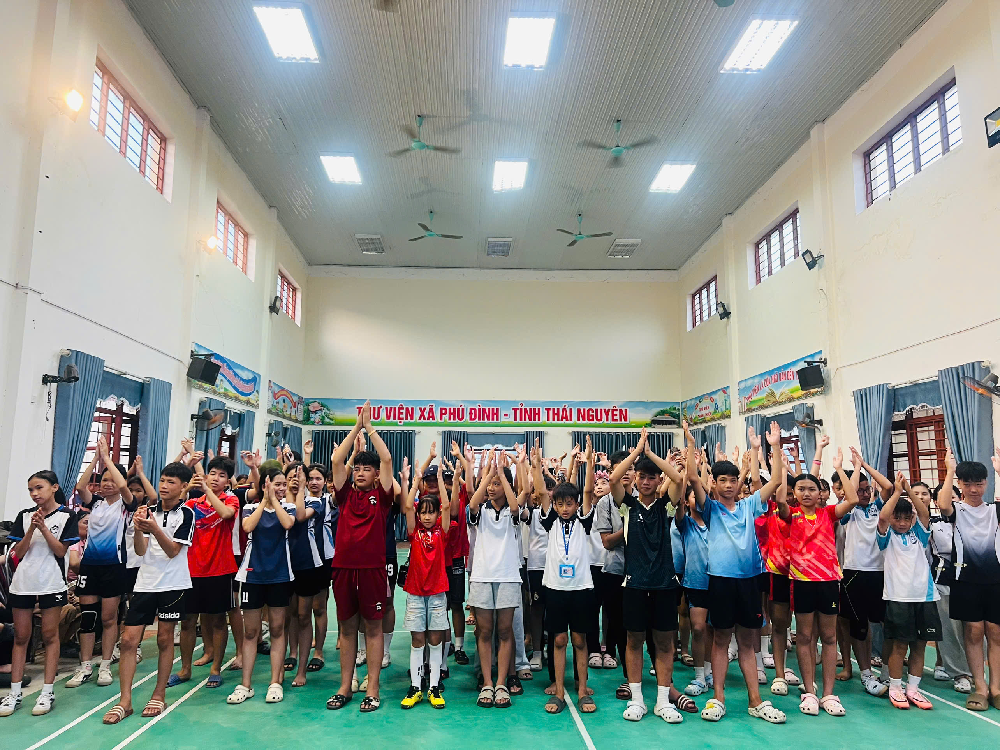
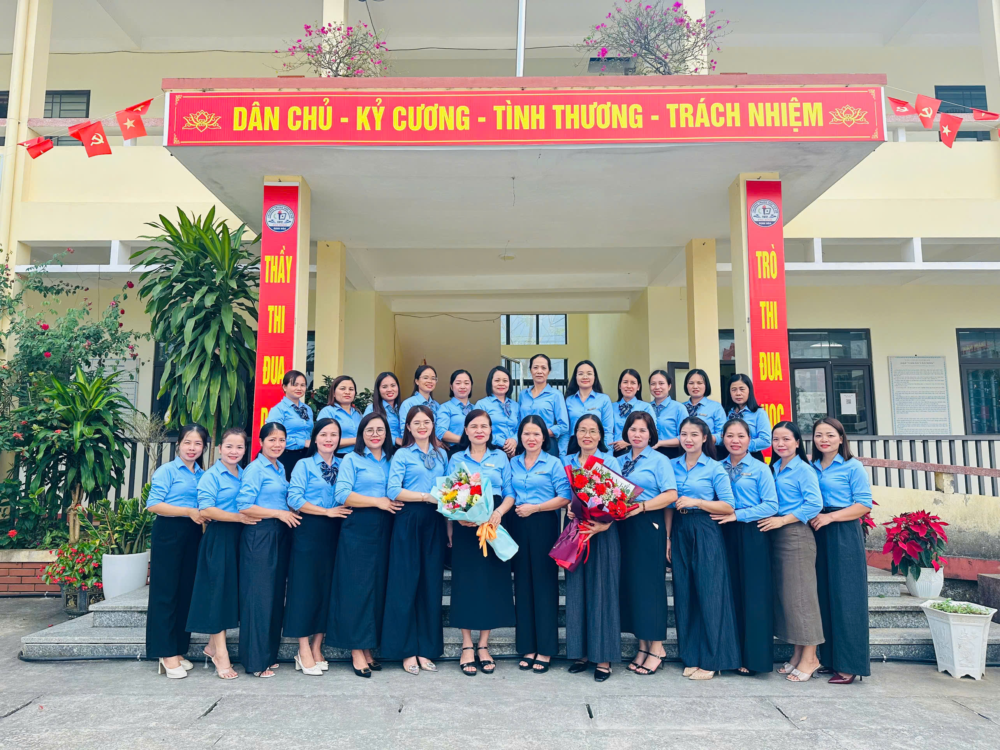
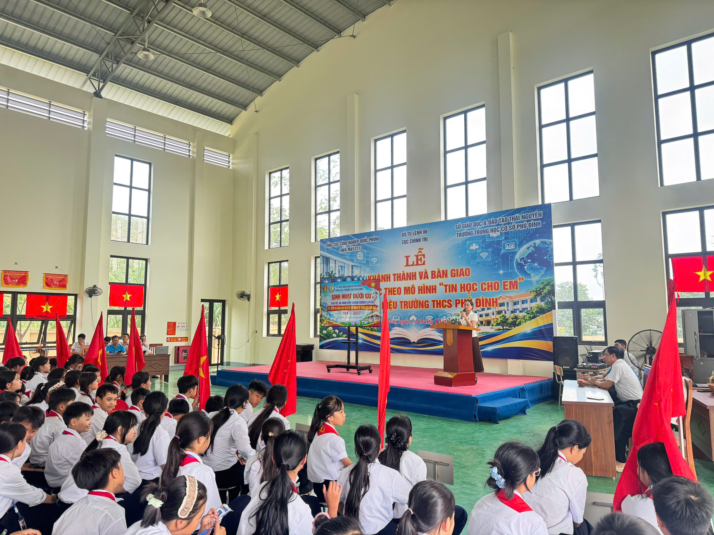
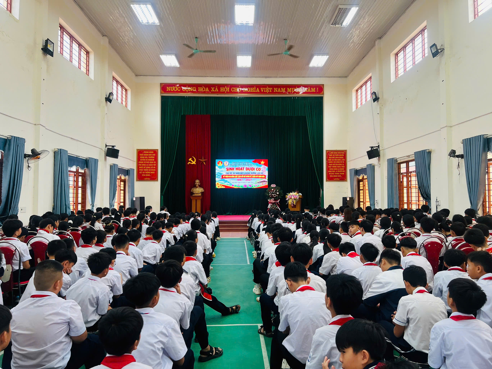

THƯ VIỆN ẢNH
🏫 Hình ảnh nhà trường
Những hoạt động, dấu ấn và khoảnh khắc đáng nhớ của thầy trò nhà trường.










Trường THCS Phú Đình
Trường THCS Phú Đình
Học sinh cần đọc kỹ toàn bộ Thể lệ trước khi tham gia kỳ thi. Việc nhấn nút "VÀO THI" được hiểu là học sinh đã đồng ý thực hiện đầy đủ các quy định của Ban Tổ chức. Mọi hành vi gian lận hoặc vi phạm quy chế đều có thể dẫn đến hủy kết quả dự thi.
Những hoạt động, dấu ấn và khoảnh khắc đáng nhớ của thầy trò nhà trường.







